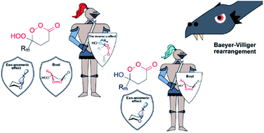

Chemical reactivity results from a complex combination of multiple contributing factors, such as, sterics, electrostatics, stereoelectronic effects, etc. Identifying and quantifying these factors can provide insight into how a reaction proceeds and help guide chemical intuition for the development of new reactions. While sterics and electrostatics are typically introduced in introductory organic courses, stereoelectronic effects are often neglected.
To learn more about stereoelectronic effects check out this article.
Because oxygen is versatile. Oxygen in a key element to life and participates in a variety of roles in chemistry because of its versatility. It is able to move electron density in order to create electron deficient centers and entice nucleophiles. But it can also provide electron density and stabilize nearby electron deficient centers with its lone pairs. If electron density is the currency of the molecular world then oxygen is a bank, collecting and dispensing electron density to its partners.
To learn more about how oxygen participates in stereoelectronic effects check out this textbook.